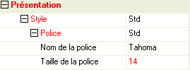

Chaque élément de la feuille de styles ("Style", "Police", "Couleur", "Bouton", "Image", etc.) comporte un ou plusieurs paramètres, pouvant eux-mêmes être un nom de style dans la feuille.
Par exemple, le style "Style" comporte quatre paramètres, tous des noms de style : "Police", "Couleur", "Bordure" et "Padding".
Le style "Police" comporte sept paramètres : une fonte, une taille et une couleur de caractères et quatre "attributs".
Dans la fenêtre des propriétés des objets, la ligne affichant le nom du style est suivie d'un sous-arbre montrant l'ensemble des paramètres du style. Par exemple :
En saisie des propriétés, le choix d'un style affecte automatiquement à l'objet concerné tous les paramètres du style enregistrés dans la feuille. Pour apporter un maximum de souplesse, vous pouvez néanmoins "personnaliser" un ou plusieurs paramètres du sous-arbre ayant pour racine le nom du style :
Une valeur non personnalisée (affichée en noir) est toujours recherchée dans la feuille de styles.
Exemple :
Vous créez plusieurs objets en leur affectant le "Style" ETAT (incluant la "Police" AFF_ETAT).
Ensuite, vous modifiez le "Style" ETAT dans la feuille en remplaçant la "Police" AFF_ETAT par ARIAL20 : cette nouvelle police ARIAL20 est immédiatement affectée aux objets déjà créés, sans autre intervention (ni compilation) au niveau du masque.
Vous modifiez maintenant les propriétés de la "Police" ARIAL20 dans la feuille (par exemple en remplaçant la couleur des caractères noire par grise) : la nouvelle couleur grise est elle-aussi immédiatement prise en compte.
Une valeur personnalisée (affichée en rouge) n’est plus affectée par un changement au niveau de la feuille.
Exemple :
Dans la fenêtre des propriétés, vous personnalisez, pour un objet donné, la taille de la "Police" AFF_ETAT en la passant de 8 à 9 : la police est ponctuellement modifiée pour cet objet précis.
Ensuite, vous modifiez la "Police" AFF_ETAT dans la feuille en passant sa taille de 8 à 10 et sa couleur de noire à grise : la taille, personnalisée, ne bougera pas pour cet objet ; la couleur, non personnalisée, sera modifiée.
Personnalisation des styles par défaut
Rappelons qu'un rendu « Standard Divalto » a été défini pour chaque type d’objet : Texte, Champ, Case à cocher, ..., Onglets, Boutons, etc.
Le paramétrage au niveau de la feuille des styles "Police", "Couleur", "Bordure" et "Padding" précise si un style doit ou non produire le rendu standard (soit globalement pour toutes les caractéristiques du style, soit spécifiquement pour quelques unes d'entre elles).
Le nom d'une propriété, paramétrée dans la feuille de styles comme devant produire le rendu standard, apparaît précédée d'un carré de couleur cyan.
ATTENTION : pour personnaliser cette propriété, vous devez non seulement modifier sa valeur mais aussi désactiver l'option « Prendre la valeur par défaut » en cliquant sur le carré correspondant.
Après le clic, le fond du carré devient blanc (l'option est désactivée) et son cadre devient rouge (pour signaler la personnalisation).
A l'inverse, une propriété non paramétrée dans la feuille de styles comme devant produire le rendu standard est signalée par un carré de couleur blanche. Vous pouvez personnaliser cette propriété pour qu'elle produise le rendu standard : réactivez l'option « Prendre la valeur par défaut » en cliquant sur le carré.
Après le clic, le fond du carré devient cyan (l'option est réactivée) et son cadre devient rouge (pour signaler la personnalisation).
Consultez la rubrique Styles par défaut pour obtenir tous les détails ainsi que des exemples sur ce sujet.
Visualisation des personnalisations
Lorsqu’un paramètre (ou un sous-paramètre) de style est modifié, lui-même et tous ses ascendants dans l'arbre des propriétés sont signalés par un changement de couleur (rouge). Ceci permet de savoir d’un coup d’œil si un paramètre a été personnalisé et ce, même quand la famille est réduite.
Exemple :
La taille de la police dans le style a été modifiée en 14 : la valeur "14" plus les familles "Police" puis "Style" puis "Présentation" sont marquées en rouge :

Reprise des valeurs de la feuille de style
Un clic droit sur une ligne personnalisée ouvre un menu contextuel avec le choix : Reprendre la valeur de la feuille de styles. Ce choix vous permet de restaurer automatiquement la valeur d’origine.
Un clic droit sur le nom d'un style pour lequel un paramètre a été personnalisé ouvre un menu contextuel avec le choix : Reprendre les valeurs de la feuille de styles. Ce choix vous permet de restaurer automatiquement toutes les valeurs d’origine.